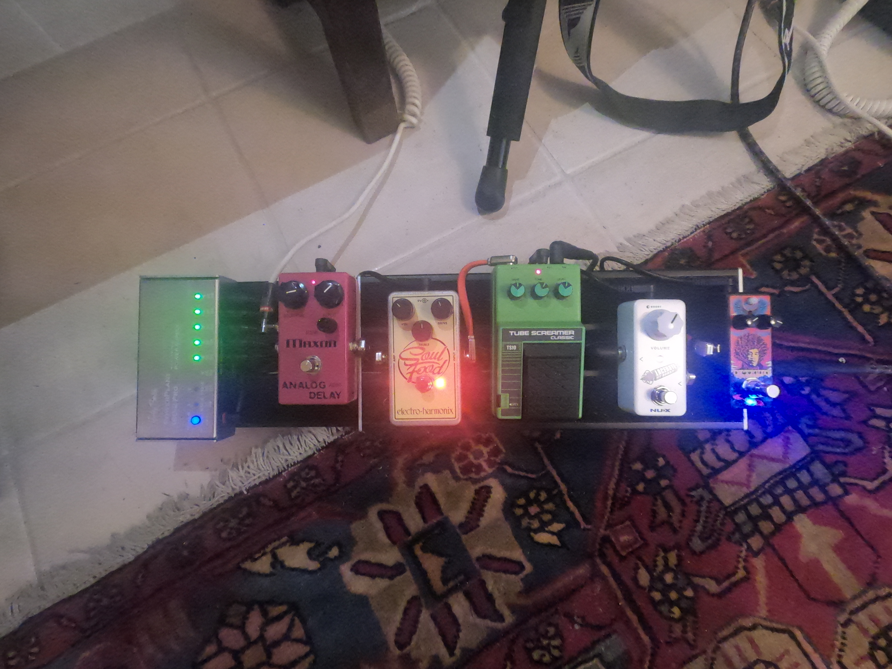
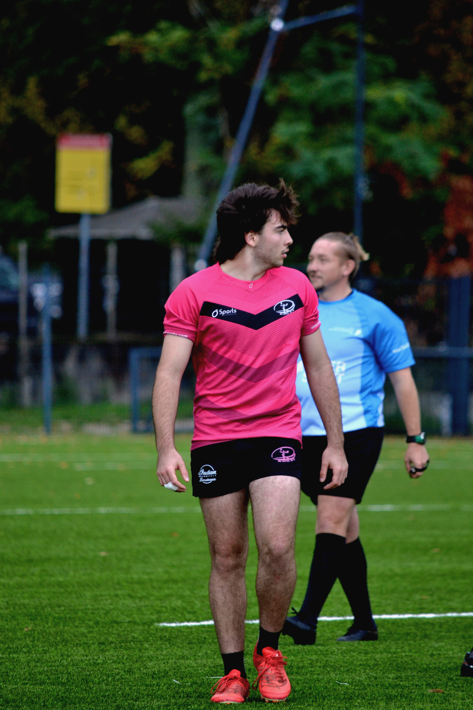

Centres d'intérêts
Ce qui me passionne
Je joue de la guitare depuis plus de 13 ans, et ma fascination pour l'instrument va bien au-delà du jeu : la dimension technique du signal audio me captive profondément. J'ouvre des pédales d'effets, des amplis à lampes et à transistors pour en étudier le montage — analyser un circuit de tube à vide ou comprendre la saturation d'un JFET, c'est pour moi autant de l'ingénierie que de la musique. En plus de la dimension hardware, l'aspect software des logiciels de musique assistée par ordinateur (MAO) prend une part importante de mon temps libre. C'est notamment grâce à des logiciels comme Ableton Live ainsi que de nombreux plug-ins que je réalise des maquettes, enregistrements et mixages audio.

Fender Stratocaster American Pro 2 70th anniversary

Ampli à lampe Fender Bassman 1963

Pédale d'effets

Setup MAO
Pratiquant depuis mes 10 ans au club de Léognan Rugby, cette passion est une école de vie autant qu'un sport. On y apprend, dès le plus jeune âge, le respect, la persévérance et la combativité. J'ai eu la responsabilité d'être capitaine de mon équipe, une expérience qui m'a appris à fédérer, à décider sous pression et à porter un groupe. Notre parcours s'est arrêté l'an dernier en 1/8 de finale du championnat de France U18 — une étape dont je suis fier et qui illustre la rigueur et le niveau atteint collectivement.

Match/action

Équipe 2024/2025

1/8 VS Massy/Anthony
La guitare m'a amené naturellement à l'électronique : comprendre pourquoi un ampli sature, pourquoi une tonalité grave ou aiguë se déroule d'une certaine façon, c'est comprendre les filtres passifs, les étages d'amplification, les régimes de saturation. Aujourd'hui, cette curiosité s'étend aux systèmes embarqués : programmer un microcontrôleur, concevoir un PCB, interfacer des capteurs — tout ce qui fait tenir ensemble le matériel et le logiciel dans un objet réel. C'est vers ce domaine que je souhaite orienter ma carrière.

Circuit d'une pédale d'effet de "Phaser"

Arduino